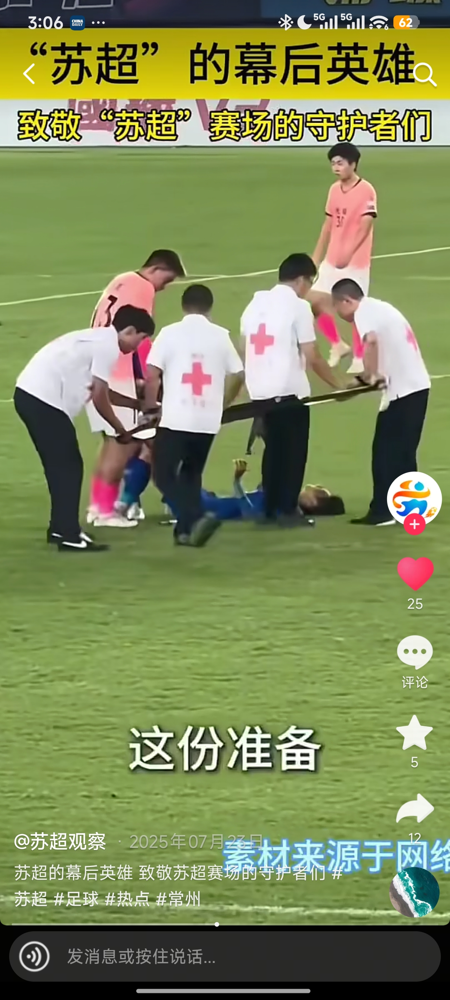
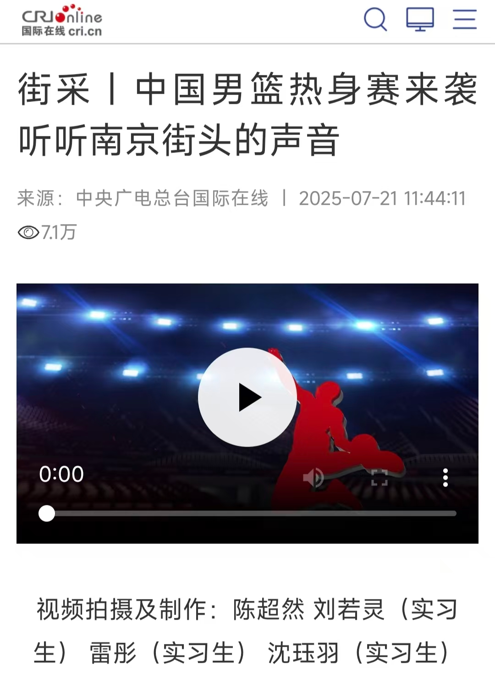
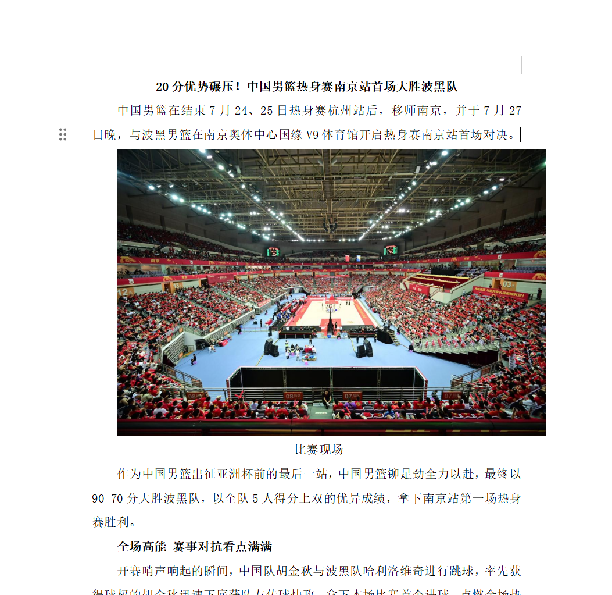
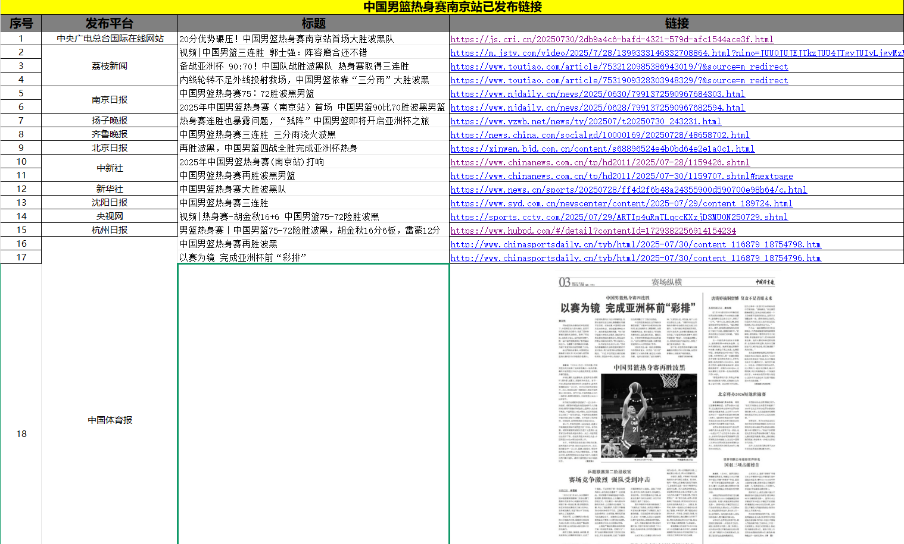
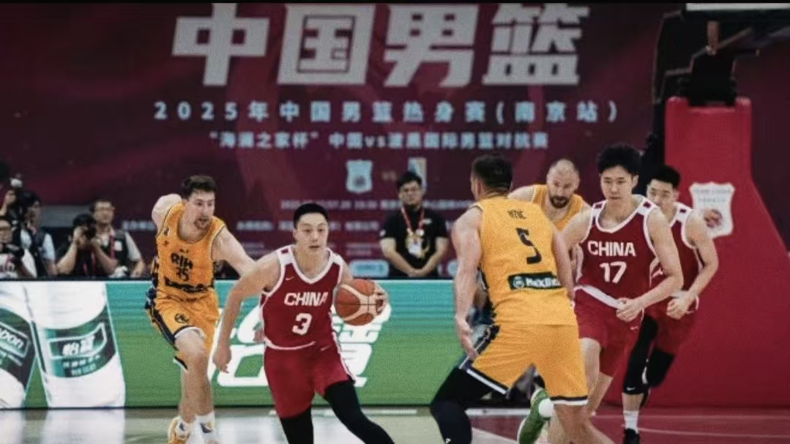
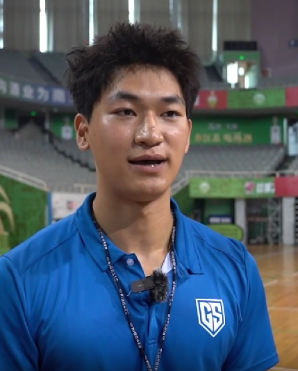
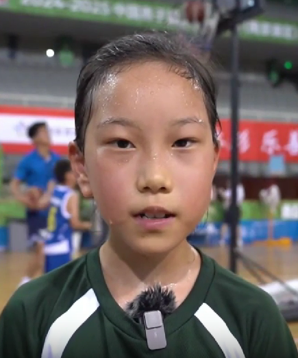

Worked on SuChao-related short-form videos and multi-format content, focusing on people, city culture and cross-cultural angles by integrating official material, UGC and related information. I engaged with topic selection, asset handling, publishing and performance review.
SuChao visual asset used to set the tone for short-form content
SHORT-FORM VIDEOCONTENT RESEARCHMULTI-FORMAT PRACTICE
PROJECT OVERVIEW / 工作概览
CRI Online Jiangsu Branch
Content Operations Intern
2025.07–2025.08
Around sports events and multi-format content needs, I supported planning, production and publishing for short-form video, horizontal video and text content.
Role & Responsibilities
Topic ideation and information organisation
Integrating official assets, UGC, people and city-related material
Participating in video production and publishing
Participating in street interviews, asset collection and text organisation
Collating published-work data and observing content performance
Key Projects
01
SuChao short videos
People, city culture and cross-cultural angles.
02
China Men's Basketball multi-format content
Horizontal video asset handling and editing.
03
Posts and news content
Research, text handling and draft editing.
My Contribution
Around the communication needs of sports-event content, I took part in topic ideation, asset integration, street interviews and content production. By organising official assets, fan UGC and people/city information, I explored more concrete, watchable and recognisable content angles.
CONTENT PORTFOLIO / 苏超短视频内容实践
I explored different content angles around people, cross-cultural perspectives, city culture and event-related topics, and compiled data feedback on published works.
Published work
Through International Eyes
Used an international-observer angle to open up SuChao topics, combining sports events with cross-cultural expression and giving viewers a concrete entry point.
Likes5,126
Saves109
Comments52
Published work
Out-of-Town Fans Travel Jiangsu
Connected out-of-town fans with Jiangsu city experiences, linking the event to travel and regional interaction.
Likes751
Saves39
Comments25
Published work
Gen Z on SuChao
Focused on young players and young personalities.
Likes143
Saves10
Comments8
Other published works
Celebrities Cheer for Each City
27 likes · 2 saves · 3 comments
Cultural Products Ride the Wave
13 likes · 2 saves · 1 comment

The Unsung Heroes
25 likes · 5 saves · 0 comments · 12 shares
The True Colours of Football
54 likes · 4 saves · 2 comments
OFFICIAL PUBLICATION / 发布记录与内容归档
During the same internship I also supported multi-format content for the China Men's Basketball warm-up game in Nanjing. Below are the CRI Online publication page, press release and distribution table as examples of official publishing and content archiving.

CRI Online publication page
21 Jul 2025 · China Men's Basketball warm-up game street-interview video. The page credits intern contributors.
01

Press release material
Text handling and editing support for the event press release.
02

Distribution table
Collated links, dates and status of published articles across platforms for archiving and review.
PERFORMANCE REVIEW / 从作品数据到内容观察
I collated likes, saves, comments and shares for seven published SuChao short videos to observe performance differences between topic angles, not just to list numbers.
Seven videos ranked by likes
International Eyes
5,126
Out-of-Town Fans
751
Gen Z on SuChao
143
True Colours of Football
54
Celebrities Cheer
27
Unsung Heroes
25
Cultural Products
13
Engagement comparison of three representative works
Likes
Intl. Eyes
5,126
Out-of-Town
751
Gen Z
143
Saves
Intl. Eyes
109
Out-of-Town
39
Gen Z
10
Comments
Intl. Eyes
52
Out-of-Town
25
Gen Z
8
Observations
The international-observer angle created a recognisable content entry point, with likes and comments well above the rest.
City-travel and regional interaction (out-of-town fans) extended the event narrative and performed second-best.
Clear performance layering exists between topics, but with limited samples it can only inform future topic selection, not prove a rule.
CONTENT PRODUCTION / 从现场信息到内容呈现
01
Topic & information
Searched for content angles around sports events, people and city culture.

02
Asset integration
Combined official assets, UGC, people and city information.
03
Street interviews & collection
Street interviews and on-site collection shown through photos and working materials. I participated, not independently handled the full interview.

Court-side street interview

Asset collection
04
Video & text editing
Supported short-form video, horizontal video, press release and post editing.
05
Publishing & review
Combined official publication records, work lists and performance review tables to document post-publish observation.
BEYOND SHORT-FORM / 从短视频到融媒体内容实践
The same internship exposed me to formats beyond short-form video: street interviews, horizontal video handling and text content.
Street Interview
Participated in street interviews and information organisation
Horizontal Video
Participated in horizontal video asset handling and editing
News Writing
Participated in research, writing and draft editing
REFLECTION / 实践收获
On content production
This practice exposed me to information organisation, asset integration, video and text handling. I also realised that the same event can be approached through people, city and cross-cultural angles.
On operations thinking
By collating published data, I began to look at the relationship between topic angle, presentation and engagement, and tried to turn performance numbers into observation references for future topics.
This experience gave me practical exposure to content production, information integration and basic performance review, and became a starting point for further research into overseas social content, audience needs and Creator expression.